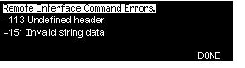

Error Conditions
A record of up to 20 command syntax or hardware errors can be stored in the function generator's error queue. See chapter 5 for a complete listing of the errors.· Errors are retrieved in first-in-first-out (FIFO) order. The first error returned is the first error that was stored. Errors are cleared as you read them. The function generator beeps once each time an error is generated (unless you have disabled the beeper).· If more than 20 errors have occurred, the last error stored in the queue (the most recent error) is replaced with "Queue overflow". No additional errors are stored until you remove errors from the queue. If no errors have occurred when you read the error queue, the function generator responds with "No error".· The error queue is cleared by the *CLS (clear status) command or when the power is cycled. The errors are also cleared when you read the error queue. The error queue is not cleared by an instrument reset (*RST command).· Front-Panel Operation: Pressand then select the topic entitled "View the remote command error queue" (topic number 2). Then press the SELECT softkey to view the errors in the error queue. As shown below, the first error in the list (i.e., the error at the top of the list) is the first error that was generated.
· Remote Interface Operation:
SYSTem:ERRor? Reads one error from the error queue
Errors have the following format (the error string may contain up to 255 characters).
-113,"Undefined header"